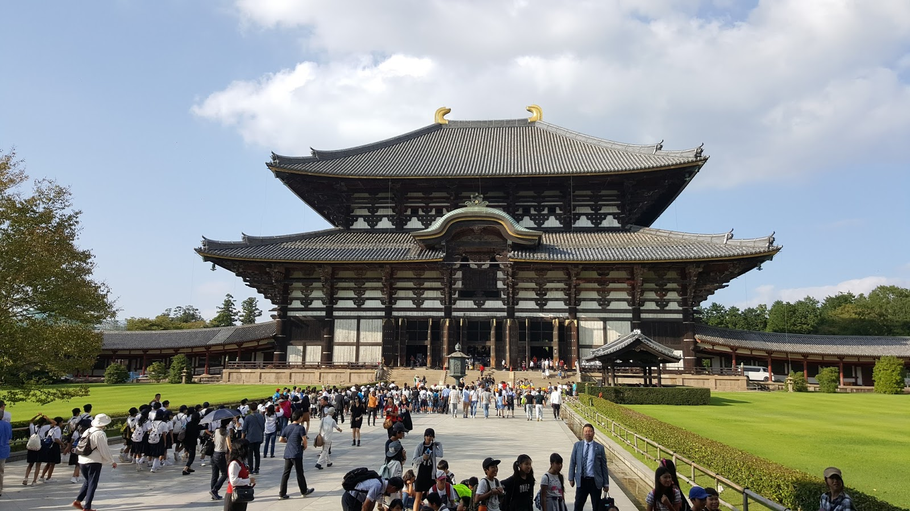

Japan's first permanent capital, Nara (奈良) is one of the country's most rewarding destinations. With eight Unesco World Heritage Sites, it's second only to Kyoto as a repository of Japan's cultural legacy
In Nara Prefecture, you get the unique opportunity to delve into Japan’s most ancient past. Nara was the first permanent capital of the then still young Japanese kingdom. Some might say, it never got surpassed. Colossal Buddhist temples and intricate Shinto shrines survived the ages as a testament to its former glory. Hence the UNESCO declared it a World Heritage Site.
A quick glance at the Nara Map will tell you that there are a loooot of temples and shrines to explore. It really pays off to plan ahead, so you don’t miss out on Nara’s attractions.
But let’s dive right into it?

Nara is a part of the Kansai region, and is conveniently located near Osaka and Kyoto. Over 1400 years ago, Nara used to be the capital of Japan. As such, only in this city can visitors find historical sites such as shrines and temples which have more than 1000 years of history.
The main charms of Nara are its historical buildings, the best known of which is Todaiji temple. Nara has an older history than Kyoto which makes it a favorite destination for travelers to visit throughout the year.